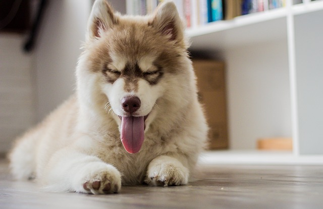

Grooming
The reason one should groom his/her Alaskan Husky is simple - your dog's physical state influences the way he feels and the way you look at your dog. Extreme cases, where lack of proper care, cleaning and grooming can directly affect the behavior of your Alaskan Husky, are not rare.
Proper grooming not only infuses a healthy glow to your dog's appearance, but also helps develop his self-esteem; while it makes you a very proud parent, when you show off your Alaskan Husky to others.
The first step involved in dog grooming is: Brushing!
Brushing has been universally acknowledged by expert dog groomers as the single most important step in grooming.
Here are FIVE steps to successfully brushing your Alaskan Husky that will prove to be extremely useful:
- Brush against the growth of the hair first with a slicker brush and then with a medium or wide-toothed comb.
- The slicker brush removes all the loose hair and the comb takes care of the tangles.
- Brush your Alaskan Husky along the hair growth and make sure you reach the skin as you brush his way.
- Then use a flea comb over the coat to get the fleas and remove any remaining tangles. Part the coat and start from the root and then comb through.
- If your Dog's paw pads are hairy, then clip them using electric clippers. Do not clip the hair in between the pads. Clip only the excess hair.
Health
We know that because you care so much about your dog, you want to take good care of her. That is why we have summarized the health concerns we will be discussing with you over the life of your Malamute. By knowing about health concerns specific to Alaskan Malamutes, we can tailor a preventive health plan to watch for and hopefully prevent some predictable risks.
Many diseases and health conditions are genetic, meaning they are related to your pet’s breed. There is a general consensus among canine genetic researchers and veterinary practitioners that the conditions described herein have a significant rate of incidence and/or impact in this breed. That does not mean your dog will have these problems; it just means that she is more at risk than other dogs. We will describe the most common issues seen in Alaskan Malamutes to give you an idea of what may come up in her future. Of course, we can’t cover every possibility here, so always check with us if you notice any unusual signs or symptoms.
This guide contains general health information important to all canines as well as the most important genetic predispositions for Alaskan Malamutes. This information helps you and us together plan for your pet’s unique medical needs. At the end of the booklet, we have also included a description of what you can do at home to keep your Mal looking and feeling her best. You will know what to watch for, and we will all feel better knowing that we’re taking the best possible care of your pal.
Much of what you can do to keep your dog happy and healthy is common sense, just like it is for people. Watch her diet, make sure she gets plenty of exercise, regularly brush her teeth and coat, and call us or a pet emergency hospital when something seems unusual (see “What to Watch For” below). Be sure to adhere to the schedule of examinations and vaccinations that we recommend for her. This is when we’ll give her the necessary “check-ups” and test for diseases and conditions that are common in Malamutes. Another very important step in caring for your pet is signing up for pet health insurance. There will certainly be medical tests and procedures she will need throughout her life and pet health insurance will help you cover those costs.

Build her routine care into your schedule to help your Mal live longer, stay healthier, and be happier during her lifetime. We cannot overemphasize the importance of a proper diet and exercise routine.
- Supervise your pet as you would a toddler. Keep doors closed, pick up after yourself, and block off rooms as necessary. This will keep her out of trouble and away from objects she shouldn’t put in her mouth.
- Brush her coat as needed, at least weekly.
- Alaskan Malamutes often have serious problems with their teeth, so you’ll need to brush them at least three times a week!
- Clean her ears weekly, even as a puppy. Don’t worry—we’ll show you how!
- She’s a large dog with lots of energy, so keep her mind and body active, or she’ll get bored. That’s when the naughty stuff starts.
- Mals are expert diggers and climbers. It is recommended that you bury your fence and that it is at least 6 feet tall.
- Malamutes can be affected by snow nose, which is a loss of pigment from the nose, making her prone to sunburn. She will need dog-safe sunscreen.
- Keep your dog’s diet consistent and don’t give her people food.
- Feed a high-quality diet appropriate for her age.
- Exercise your dog regularly, but don’t overdo it at first.
Nutrition
All packaged pet foods, whether they are canned, bagged or boxed, will give you a breakdown as to protein, fats, fibre and moisture. Many will state they are a “Completely Balanced Nutritional Dog Food”, and supplements need not be added.
The best and easiest food (and also the cheapest) to use is dry feed – Meal or Kibble. A good dry food should be 21% to 27% with 10% to 14%fat (24 to 30% protein, and 14 to 20% fat for working dogs). Canned foods are only about 12% protein while soft foods are about 20% protein with dry food being 21 to 28% protein. The higher protein products are useful for growing puppies and active working dogs, but are higher than what the average dog needs. 21 to 24% usable protein is sufficient for most dogs. Big dogs tend to prefer a chunk type dog food as it helps keep their teeth clean and they have something to chew.
A well formed stool is a sign of good health. When a dog passes a fairly solid stool, it squeezes the anal glands preventing them from becoming impacted.
At least 90% of your dog's diet should be dog food. Table scraps are fine, but always in moderation. Cooked eggs, soup, gravy, cooked cereal, vegetables and the water they are cooked in, cheese, fish, chicken, raw muscle meat, and cooked organ meat are all good additions to your dog's regular feed.
You should add fat to your dog's diet, but in most cases it must be introduced gradually. Dry dog foods are generally fat deficient. Use oils, bacon drippings or suet (beef fat), and add daily to the dry ration. Fat is a good source of energy, keeps the coat glossy, and is essential for vitamin absorption, as some vitamins are only fat soluble.
Finicky eaters are generally created by well-meaning owners. If the dog will not eat and the food is not spoiled, leave the food, and the dog will eat if hungry. No dog will starve himself. Malamutes evolved as dogs who could do with less food, and they generally do not need the colossal amounts of food shown on some dog food packages. As the dog matures and is less active, he will need less food.
Pups are best kept lean during their first year. This means you should see the definition of rib cage even when in heavy coat and you should always be able to feel the ribs. Over feeding and over supplementation can cause weak top lines, bad feet, kidney problems and Hip Dysplasia. A slower developing dog, fed a balanced diet, will reach his genetic potential soon enough, live longer, and stay healthier.
Self-feeding (leaving food available at all times) of dry food and water usually eliminates gorging, overeating, bloat, etc., and is easier on the dog. In some cases, this does not work, as dogs will overeat out of boredom and oral fixation. In those instances 2 meals a day , one in the morning and one in the supper hours should be sufficient.
Dry Puppy Food
As the puppy grows, the basic diet of puppy food will supply all his needed growth factors as well as help to provide a shiny coat and lots of energy. I recommend with the average puppy that they should begin eating the adult ration at around 9 months of age, and continue on the adult ration from then on. At this time self feed can be tapered off, and the pup gradually switched to one meal daily of this adult ration.
Beef Fat/Ground Beef
This can be obtained from your butcher as suet. It is a very good addition to the winter diet of a dog living outside, as it gives instant fuel for warmth, and additional energy during cold spells. Ground Beef may be fed if desired, and it makes for good muscle tone, and a bright energetic dog.
A special treat for your dog can be Milk Bones or other like biscuits which help keep teeth bright and clean. Raw knuckle or shank bones are also good for the teeth. Do not feed rib, steak, or chicken bones, as they often splinter.
Water should be available free choice at all times.